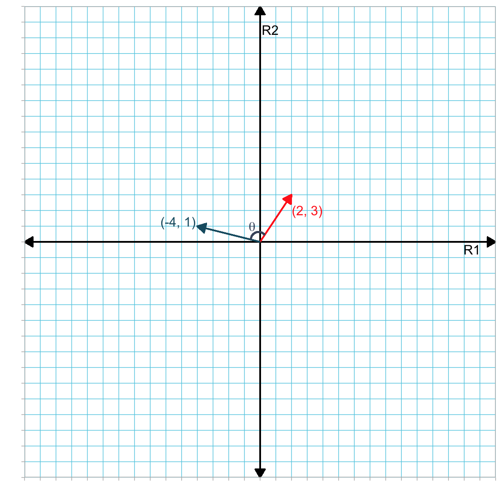
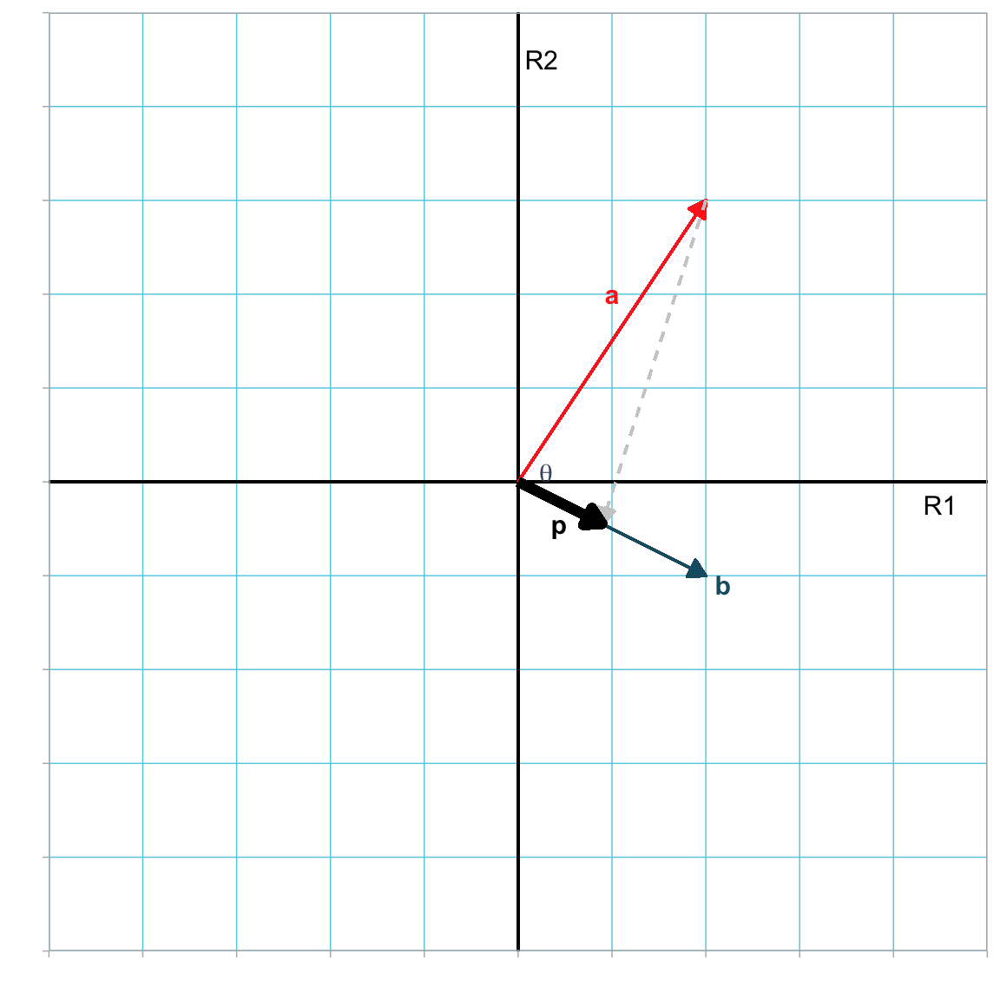
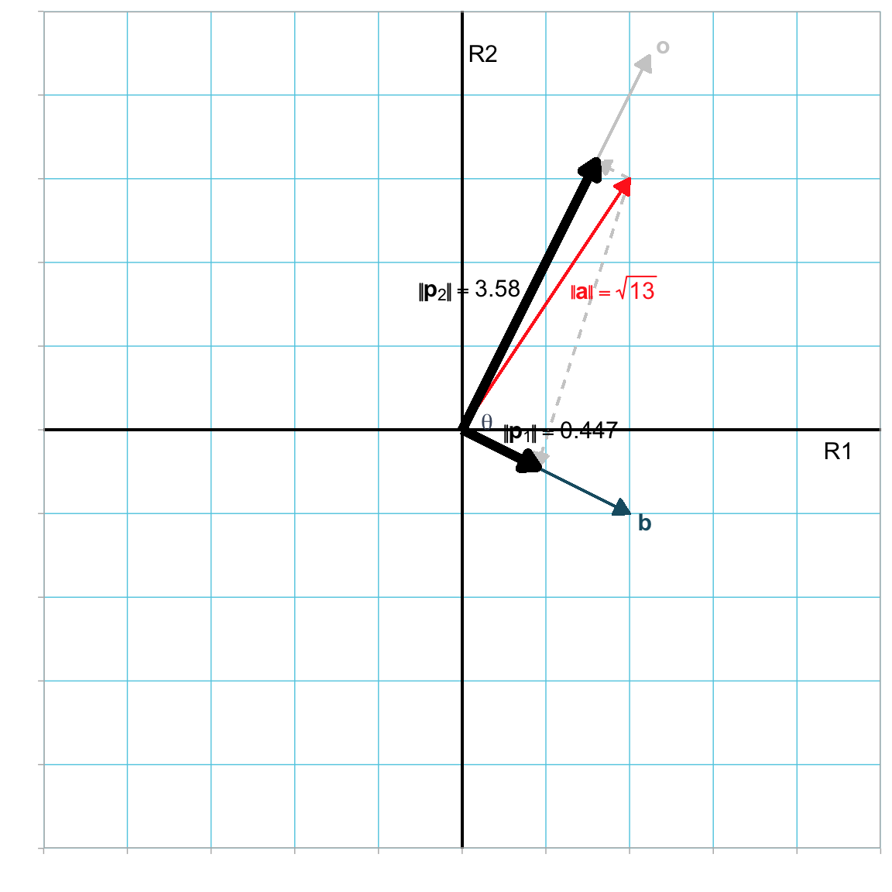

4 Vector Geometry: Angles, Projection, and Decomposition
In this chapter you will learn some about some additional ideas in the geometry of vectors. Again, while the illustration of these concepts is restricted to 2-dimensional space, all of these ideas can be extended to n-dimensions.
4.1 Angle Between Vectors
It can be quite useful to determine the angle between two vectors. For example, what is the angle between vector a and b where,
\[ \mathbf{a} = \begin{bmatrix} 2 \\ 3 \end{bmatrix} \quad \mathrm{and} \quad \mathbf{b}= \begin{bmatrix} -4 \\ 1 \end{bmatrix} \]
Figure 4.1 shows both vectors displayed in the same two-dimensional reference coordinate system.
The angle between these vectors is denoted as \(\theta\), and can be found using the following:
\[ \cos (\theta) = \frac{\mathbf{a}\bullet\mathbf{b}}{\lvert\lvert\mathbf{a}\rvert\rvert\times\lvert\lvert\mathbf{b}\rvert\rvert} \]
That is, the cosine of the angle between the two vectors is equal to the dot product of the vectors divided by the product of their lengths. To find the angle (\(\theta\)), we can compute the arc-cosine of this ratio. In our example,
\[ \begin{split} \cos (\theta) &= \frac{-5}{\sqrt{13}\times\sqrt{17}} \\[2ex] &= -0.336 \\[4ex] \arccos(1.914) &= 1.914 \end{split} \]
and \(\theta=109.65^{\circ}\). Below is the R syntax to compute this angle.
# Create vectors
a = matrix(data = c(2, 3), ncol = 1)
b = matrix(data = c(-4, 1), ncol = 1)
# Compute dot product between a and b
a_dot_b = sum(a * b)
# Compute vector lengths
l_a = sqrt(sum(a * a))
l_b = sqrt(sum(b * b))
# Compute theta (in radians)
acos(a_dot_b / (l_a * l_b))[1] 1.91382# Compute theta (in degrees)
acos(a_dot_b / (l_a * l_b)) * 180 / pi[1] 109.6538MATH NOTE
Manipulating the formula to compute the angle between two vectors provides a common formula to determine the dot product between two vectors.
\[ \begin{split} \cos (\theta) &= \frac{\mathbf{a}\bullet\mathbf{b}}{\lvert\lvert\mathbf{a}\rvert\rvert\times\lvert\lvert\mathbf{b}\rvert\rvert} \\[2ex] \mathbf{a}\bullet\mathbf{b} &= \lvert\lvert\mathbf{a}\rvert\rvert\times\lvert\lvert\mathbf{b}\rvert\rvert \cos(\theta) \end{split} \]
That is the dot product between vectors a and b is equal to the product of their magnitudes and the cosine of the angle between them.
4.1.1 Orthogonal Vectors
Two vectors a and b are orthogonal when the angle between them is \(90^\circ\). Since the cosine of a \(90^\circ\) angle is 0, if a and b are orthogonal, then
\[ 0 = \frac{\mathbf{a}\bullet\mathbf{b}}{\lvert\lvert\mathbf{a}\rvert\rvert\times\lvert\lvert\mathbf{b}\rvert\rvert} \]
For example, consider the following two elementary vectors
\[ \mathbf{e}_1 = \begin{bmatrix} 1 \\ 0 \end{bmatrix} \qquad \mathbf{e}_2 = \begin{bmatrix} 0 \\ 1 \end{bmatrix} \]
The dot product between these two vectors is 0, which implies that the cosine of the angle between them must also be 0, indicating that \(\mathbf{e}_1\) and \(\mathbf{e}_2\) are orthogonal.
4.1.2 Collinear Vectors
Two vectors a and b are collinear when the angle between them is \(0^\circ\). Since the cosine of a \(0^\circ\) angle is 1, if a and b are collinear, then
\[ 1 = \frac{\mathbf{a}\bullet\mathbf{b}}{\lvert\lvert\mathbf{a}\rvert\rvert\times\lvert\lvert\mathbf{b}\rvert\rvert} \]
For example, consider the following two vectors
\[ \mathbf{a} = \begin{bmatrix} 2 \\ 1 \end{bmatrix} \qquad \mathbf{b} = \begin{bmatrix} 6 \\ 3 \end{bmatrix} \]
\[ \begin{split} \frac{\mathbf{a}\bullet\mathbf{b}}{\lvert\lvert\mathbf{a}\rvert\rvert\times\lvert\lvert\mathbf{b}\rvert\rvert} &= \frac{14}{\sqrt{5}\times\sqrt{45}} \\[2ex] &= \frac{14}{\sqrt{225}} \\[2ex] &= \frac{14}{14} \\[2ex] &= 1 \end{split} \]
This implies that a and b are collinear. Two vectors are collinear when one can be written as a linear combination of the other. In our example,
\[ \mathbf{b} = 3\mathbf{a} \]
Geometrically, collinear vectors are parallel to one another (remember location in the reference space is a convenience).
4.2 Orthogonal Projection
Orthogonal projection of vector a on vector b occurs by dropping a perpendicular line from the terminus of a to intersect with x2.

The result is a vector p which is collinear with b but has a different length. To compute the length of p, we make use of the fact that the projection creates a right triangle having a hypotenuse of a and an adjacent leg of p to the angle \(\theta\). Then,
\[ \begin{split} \cos(\theta) &= \frac{\lvert\lvert\mathbf{p}\rvert\rvert}{\lvert\lvert\mathbf{a}\rvert\rvert} \\[2em] \lvert\lvert\mathbf{p}\rvert\rvert &= \lvert\lvert\mathbf{a}\rvert\rvert \times \cos(\theta) \end{split} \]
Since \(\theta\) is the angle between a and b,
\[ \begin{split} \lvert\lvert\mathbf{p}\rvert\rvert &= \lvert\lvert\mathbf{a}\rvert\rvert \times \cos(\theta) \\[2em] &= \lvert\lvert\mathbf{a}\rvert\rvert \times \frac{\mathbf{a}\bullet\mathbf{b}}{\lvert\lvert\mathbf{a}\rvert\rvert\times\lvert\lvert\mathbf{b}\rvert\rvert}\\[2em] &= \frac{\mathbf{a}\bullet\mathbf{b}}{\lvert\lvert\mathbf{b}\rvert\rvert} \end{split} \]
That is, the magnitude of the projection p, is the ratio of the dot product between vectors a and b to the magnitude of b. Consider the following two vectors:
\[ \mathbf{a} = \begin{bmatrix} 2 \\ 3 \end{bmatrix} \qquad \mathbf{b} = \begin{bmatrix} 2 \\ -1 \end{bmatrix} \]
Projecting a onto b, geometrically,

We can find the magnitude of p using our formula:
\[ \begin{split} \lvert\lvert\mathbf{p}\rvert\rvert &= \frac{\mathbf{a}\bullet\mathbf{b}}{\lvert\lvert\mathbf{b}\rvert\rvert} \\[2ex] &= \frac{1}{\sqrt{5}} \\[2ex] &= 0.447 \end{split} \]
# Create vectors
a = c(2, 3)
b = c(2, -1)
# Compute dot product of a and b
a_dot_b = sum(a * b)
# Compute length of b
l_b = sqrt(sum(b * b))
# Compute length of p
l_p = a_dot_b / l_b
l_p[1] 0.4472136NOTATION
Henceforth, we will denote the projection of vector a onto vector b as:
\[ \mathbf{p}_{\mathbf{a}\perp\mathbf{b}} \]
4.3 Orthogonal Decomposition
Orthogonal projection of a vector results in a geometric decomposition of the vector into two additive components. Figure 4.4 illustrates the decomposition of vector a into two additive components, \(\mathbf{p}_1\) and \(\mathbf{p}_2\). That is,
\[ \mathbf{a} = \mathbf{p}_1 + \mathbf{p}_2 \]

The vector \(\mathbf{p}_1\) is the same orthogonal projection from the earlier example, namely \(\mathbf{p}_{\mathbf{a}\perp\mathbf{b}}\). The vector \(\mathbf{p}_1\) is a second projection, of a onto a vector o (\(\mathbf{p}_{\mathbf{a}\perp\mathbf{o}}\)). The vector o is, by definition, orthogonal to b.
The lengths of the two projections correspond to the lengths of the sides of the right triangle where the hypotenuse is a. Namely1,
\[ \begin{split} \lvert\lvert\mathbf{p}_{\mathbf{a}\perp\mathbf{b}}\rvert\rvert &= \lvert\lvert\mathbf{a}\rvert\rvert \times \cos(\theta) \\[2em] \lvert\lvert\mathbf{p}_{\mathbf{a}\perp\mathbf{o}}\rvert\rvert &= \lvert\lvert\mathbf{a}\rvert\rvert \times \sin(\theta) \end{split} \]
As an example, we can decompose a Using our two previous example vectors:
\[ \mathbf{a} = \begin{bmatrix} 2 \\ 3 \end{bmatrix} \qquad \mathbf{b} = \begin{bmatrix} 2 \\ -1 \end{bmatrix} \]
We previously determined that \(\lvert\lvert\mathbf{a}\rvert\rvert=\sqrt{13}\), \(\lvert\lvert\mathbf{b}\rvert\rvert=\sqrt{5}\), and \(\lvert\lvert\mathbf{p}_{\mathbf{a}\perp\mathbf{b}}\rvert\rvert = 0.447\). Recall,
\[ \cos(\theta) = \frac{\mathbf{a}\bullet\mathbf{b}}{\lvert\lvert\mathbf{a}\rvert\rvert \times \lvert\lvert\mathbf{b}\rvert\rvert} \]
This implies that \(\cos(\theta)=\frac{1}{\sqrt{65}}\) and, taking the arc-cosine, that \(\theta = 82.87^\circ\) (or 1.45 radians). Using this value, we can compute the magnitude of the second projection as:
\[ \begin{split} \lvert\lvert\mathbf{p}_{\mathbf{a}\perp\mathbf{o}}\rvert\rvert &= \lvert\lvert\mathbf{a}\rvert\rvert \times \sin(\theta) \\[2em] &= \sqrt{13} \times \sin(82.87^\circ) \\[2em] &= 3.58 \end{split} \]
# Compute length of a
l_a = sqrt(sum(a * a))
# Compute theta (in radians)
theta = acos(a_dot_b / (l_a * l_b))
theta[1] 1.446441# Compute length of projection of a onto o
l_p2 = l_a * sin(theta)
l_p2[1] 3.577709We can use the Pythagorean theorem to verify the computation of the two projections’ lengths. Since the square of the hypotenuse of a right triangle is the sum of the squares of the sides,
\[ \begin{split} \lvert\lvert\mathbf{p}_{\mathbf{a}\perp\mathbf{b}}\rvert\rvert^2 +\lvert\lvert\mathbf{p}_{\mathbf{a}\perp\mathbf{o}}\rvert\rvert^2 &= \lvert\lvert\mathbf{a}\rvert\rvert^2 \\[2em] 3.58^2 + 0.447^2 &= (\sqrt{13})^2 \\[2em] 13 &= 13 \end{split} \]
# Compute sum of the squared projection lengths
l_p^2 + l_p2^2[1] 13# Compute length of a squared
l_a^2[1] 13# Check values using Pythagorean Theorem
l_a^2 == l_p^2 + l_p2^2[1] TRUEThe final system is shown in Figure 4.5.

There are other ways to compute the length of \(\mathbf{p}_{\mathbf{a}\perp\mathbf{o}}\). For example, since o is orthogonal to b, the angle between o and a is \(\phi=90-\theta\). Then \(\lvert\lvert\mathbf{p}_{\mathbf{a}\perp\mathbf{o}}\rvert\rvert=\lvert\lvert\mathbf{a}\rvert\rvert \times \cos(\phi)\).↩︎